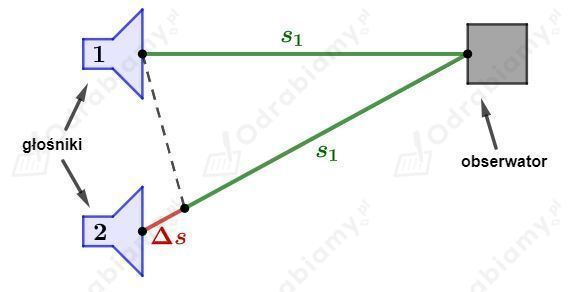
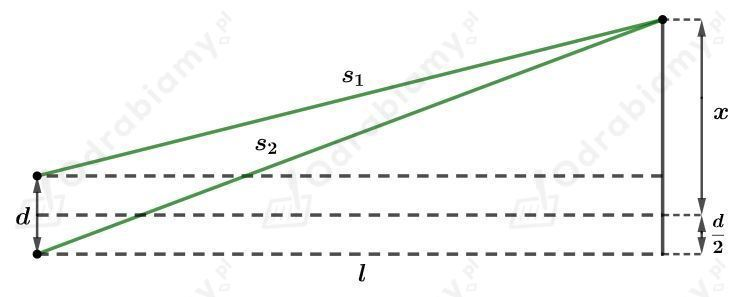
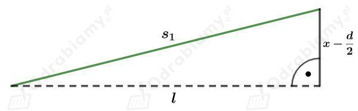
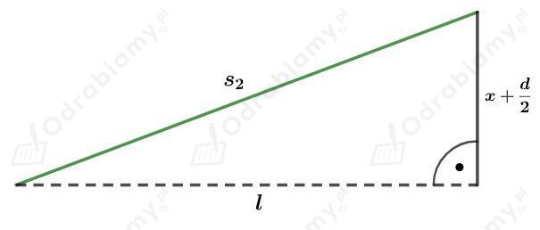

Długość emitowanej fali dźwiękowej:
a)
Odległości osoby od głośników:
Różnica dróg przebyta przez falę dźwiękową jest równa:
Sprawdzamy, czy różnica przebytych dróg przez falę dźwiękową jest równa całkowitej wielokrotności długości fali:
Różnica odległości źródeł dźwięku od obserwatora jest równa całkowitej długości fali, zatem obserwator usłyszy wzmocnienie dźwięku.
b)
Odległości osoby od głośników:
Różnica dróg przebyta przez falę dźwiękową jest równa:
Sprawdzamy, czy różnica przebytych dróg przez falę dźwiękową jest równa całkowitej wielokrotności długości fali:
Różnica odległości źródeł dźwięku od obserwatora nie jest równa całkowitej długości fali - jest równa jednej długości fali i jeszcze pół długości fali. Zatem obserwator usłyszy wygaszenie dźwięku.
Odległości obserwatora od głośników:
Rysunek do zadania:

Sprawdzamy dla poszczególnych długości fal , czy różnica dróg przebytych przez fale dźwiękowe jest równa całkowitej wielokrotności długości fali.
a)
Różnica odległości źródeł dźwięku od obserwatora jest równa całkowitej długości fali - pięciokrotność długości fali. Zatem obserwator usłyszy wzmocnienie dźwięku.
b)
Różnica odległości źródeł dźwięku od obserwatora nie jest równa całkowitej długości fali - jest równa dwóm długościom fali i jeszcze pół długości fali. Zatem obserwator usłyszy wygaszenie dźwięku.
c)
Różnica odległości źródeł dźwięku od obserwatora jest równa całkowitej długości fali - dwukrotność długości fali. Zatem obserwator usłyszy wzmocnienie dźwięku.
d)
Różnica odległości źródeł dźwięku od obserwatora jest równa całkowitej długości fali - jedna cała długość fali. Zatem obserwator usłyszy wzmocnienie dźwięku.
Z racji tego, że dwie osoby nie są w stanie zagrać identycznie tej samej melodii i uderzać w struny w dokładnie tych samych chwilach oraz, że instrument wytwarza składowe dźwięku o różnych długościach fal, które nakładają się na siebie to nie zaobserwujemy interferencji dźwięku.
Interferencję dźwięku możemy obserwować dla grających głośników jeśli wytwarzają one czyste tony o ustalonej długości fali.
Dane:
Szukane:
Rozwiązanie:
Rozpatrujemy dwa trójkąty prostokątne (1) i (2), których przeciwprostokątne i są odległościami jakie pokonuje światło lasera.
Korzystając z rysunku dołączonego do zadania otrzymujemy:

Rozpatrujemy trójkąt (1):

Korzystając z twierdzenia Pitagorasa wyznaczamy odległość :
Rozpatrujemy trójkąt (2):

Korzystając z twierdzenia Pitagorasa wyznaczamy odległość :
Różnica dróg przebytych przez fale światła jest równa:
Sprawdzamy, czy różnica dróg przebytych przez fale światła jest równa całkowitej wielokrotności długości fali .
Wynik możemy przybliżyć do liczby całkowitej. Zatem różnica przebytych dróg przez fale światła jest równa jednej długości fali - na ekranie zobaczymy jasny prążek obrazujący wzmocnienie fali.